01 Tokarenje
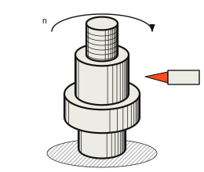
CNC tokarenje do Ø420 mm
Vratila, osovine, čahure i prirubnice iz čelika, nehrđajućeg čelika, aluminija, mjedi i plastike. Pogonjeni alati za poprečna bušenja u istom stezanju.
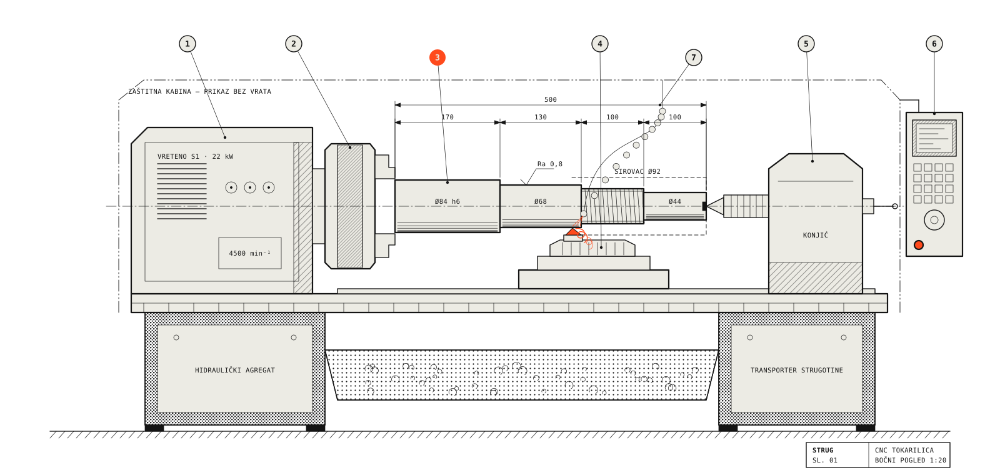
Ø4 – Ø420 mmCNC tokarenje do 1500 mm duljine ±0,005 mmKružno brušenje nakon kaljenjaSTRUG je tokarska radionica s devet CNC strojeva. Tokarimo, brusimo, glodamo i režemo navoje za strojogradnju, hidrauliku i održavanje — od jednog komada do serije od deset tisuća.
Zatraži ponudu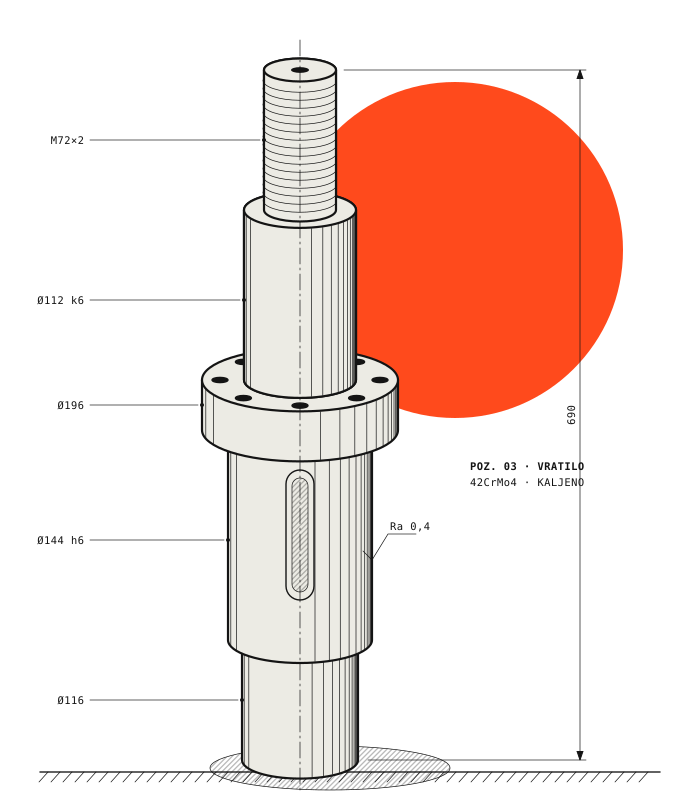
Serijski dio ne smije odstupati. Tisućiti komad mora pasati kao prvi — zato svaku mjeru provjeravamo na stroju i u mjernoj sobi, a ne na oko.
Kako radimoRadimo za
Strojogradnja · Hidraulika · Pomorstvo · Energetika · Prehrambena industrija · Poljoprivredni strojevi
Usluge
Četiri obrade pod jednim krovom znače jedno stezanje manje, jedan transport manje i jednu odgovornost — našu.
01 Tokarenje

Vratila, osovine, čahure i prirubnice iz čelika, nehrđajućeg čelika, aluminija, mjedi i plastike. Pogonjeni alati za poprečna bušenja u istom stezanju.
02 Brušenje
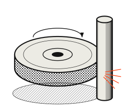
Vanjsko i unutarnje brušenje kaljenih dijelova do IT5 i Ra 0,2 µm. Dosjedi ležajeva, brtvene površine, klipnjače.
03 Glodanje
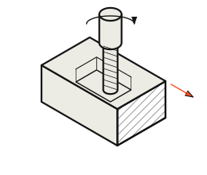
Utori za pera, ključne plohe i džepovi na troosnom i četveroosnom glodanju, kao završetak tokarenog dijela.
04 Navoji
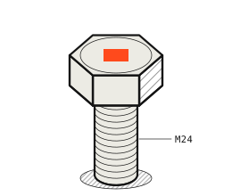
Vanjski i unutarnji navoji od M3 do Tr120, kontrolirani čepovima i prstenovima. Specijalni navoji po nacrtu.
Od sirovca
do mjere ±0,005
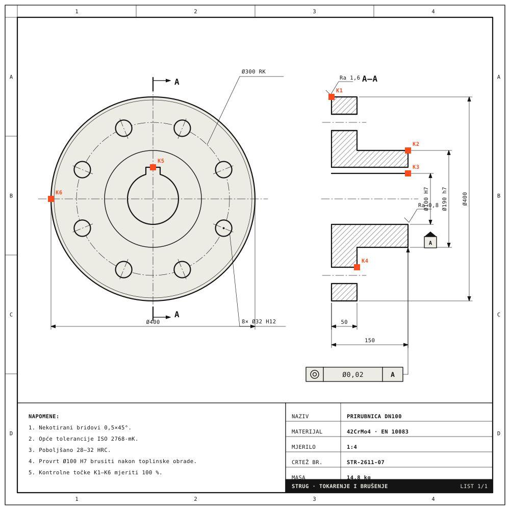
Prije ponude tehnolog prolazi svaku kotu, toleranciju i oznaku hrapavosti. Ako je nešto skupo za izradu, a nevažno za funkciju, javit ćemo vam prije nego što platite.
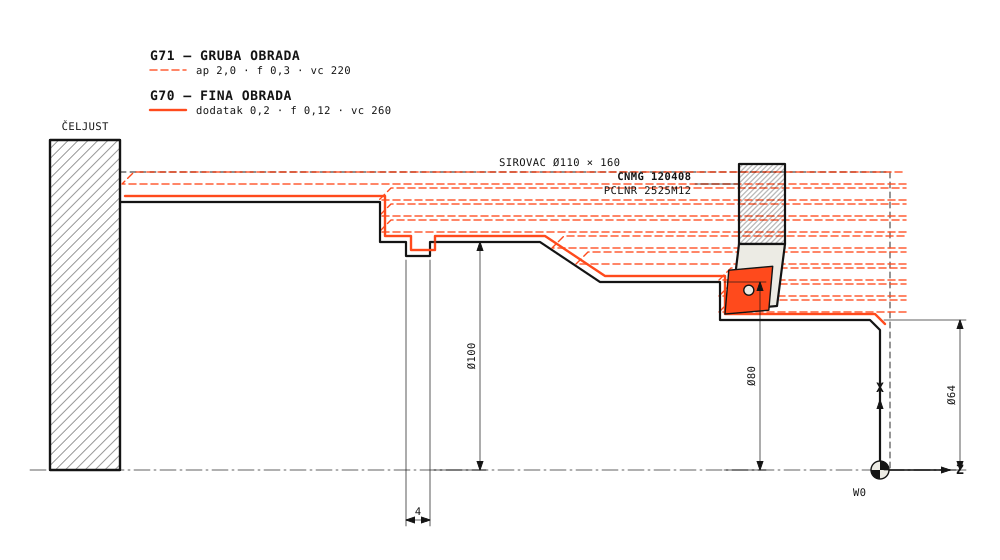
( STR-2611-12 · OSOVINA Ø40 ) N10 G54 G96 S220 M03 N20 T0101 ( CNMG 120408 ) N30 G00 X112. Z2. N40 G71 U2.0 R0.5 N50 G71 P60 Q140 U0.2 W0.1 F0.3 N60 G00 X64. … N150 G70 P60 Q140 F0.12 N160 G28 U0 W0 N170 M30
Praćenje naloga
| Točka | Nazivno | Izmjereno | |
|---|---|---|---|
| K1 | Ø400 ±0,2 | 400,06 | OK |
| K2 | Ø190 h7 | 189,982 | OK |
| K3 | Ø100 H7 | 100,018 | OK |
| K4 | 50 ±0,05 | 50,02 | OK |
| K5 | ◎ 0,02 A | 0,011 | OK |
Napredak
84/120
Stroj: DMG CTX 510 · Smjena B
Isporuka: 19. 11. 2026.
Kupac vidi isto što i majstor: u kojoj je fazi nalog, na kojem stroju i koje su izmjerene vrijednosti. Mjerni izvještaj stiže s robom, a i ranije ako ga tražite.
KontaktProces · 4 koraka
Ne mijenjate svoje crteže ni rokove zbog nas. Uklapamo se u vaš plan nabave — jednokratno, okvirnim ugovorom ili kanban isporukama.
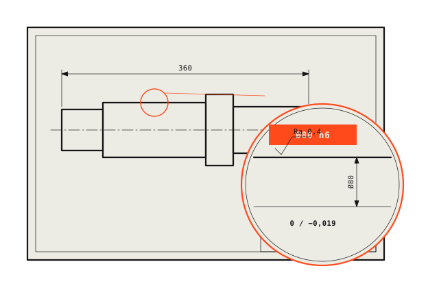
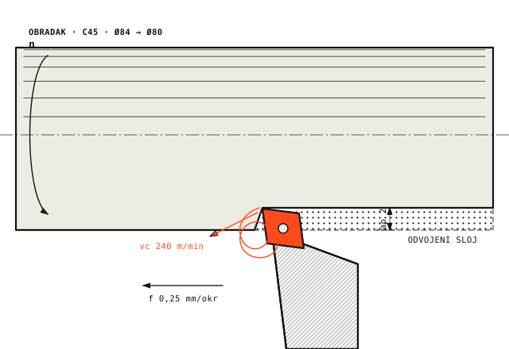
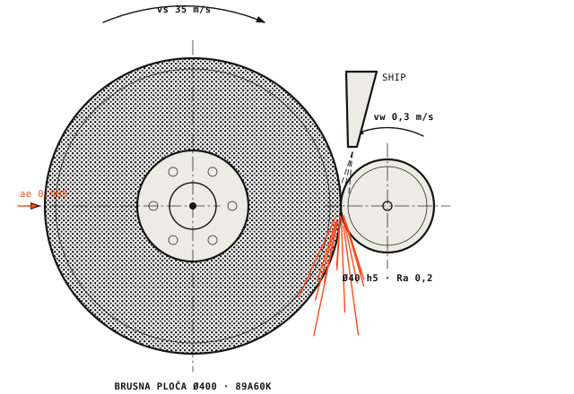
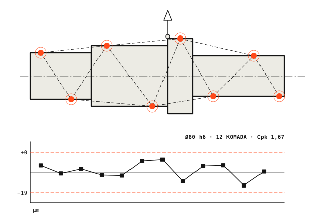
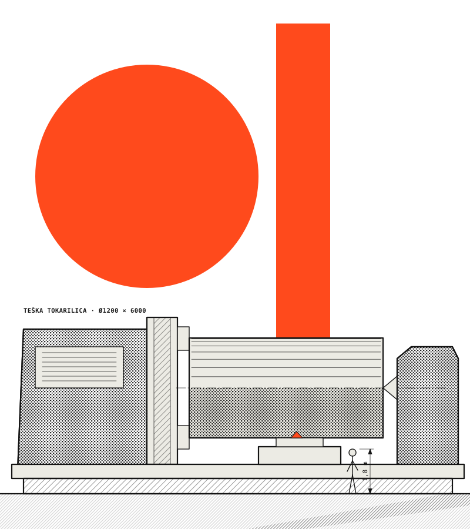
Industrije
Vratila, zupčanici-nosači, čahure i distanceri za proizvođače strojeva i linija.
Klipnjače, klipovi, glave cilindara i brtvene površine brušene na Ra 0,2.
Osovine kormila, čahure i prirubnice od nehrđajućih i duplex čelika.
Dijelovi pumpi, turbina i armatura, s certifikatom materijala 3.1.
Nehrđajući dijelovi za strojeve za punjenje i pakiranje, polirani.
Rezervni dijelovi po uzorku kad originala više nema — izmjerimo i izradimo.
Hitne izrade unutar 48 sati kad linija stoji.
Upit
Nacrt, količina i rok — to je sve što trebamo za početak.
Pošalji nacrt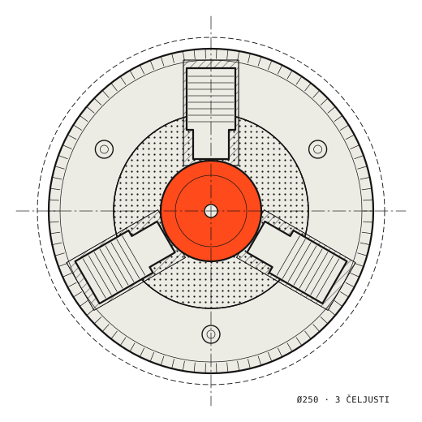